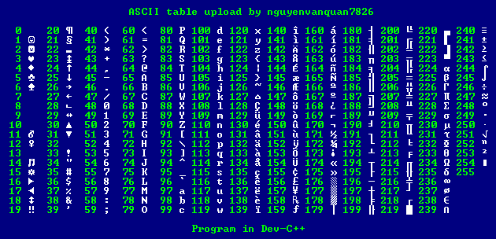
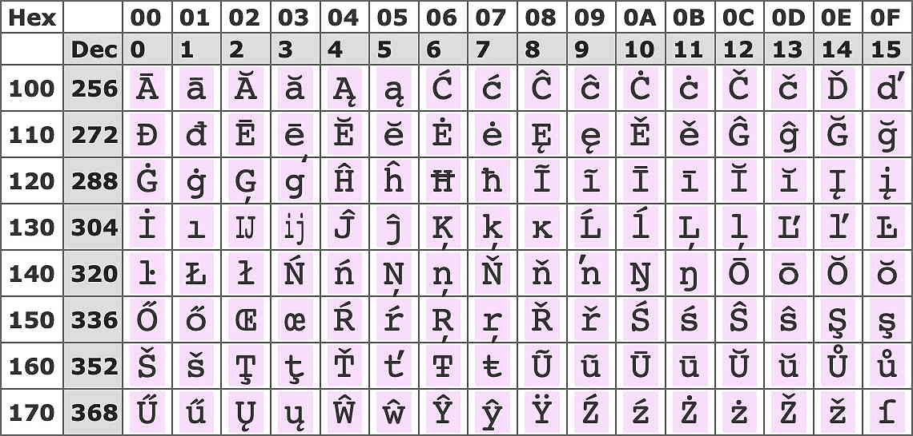
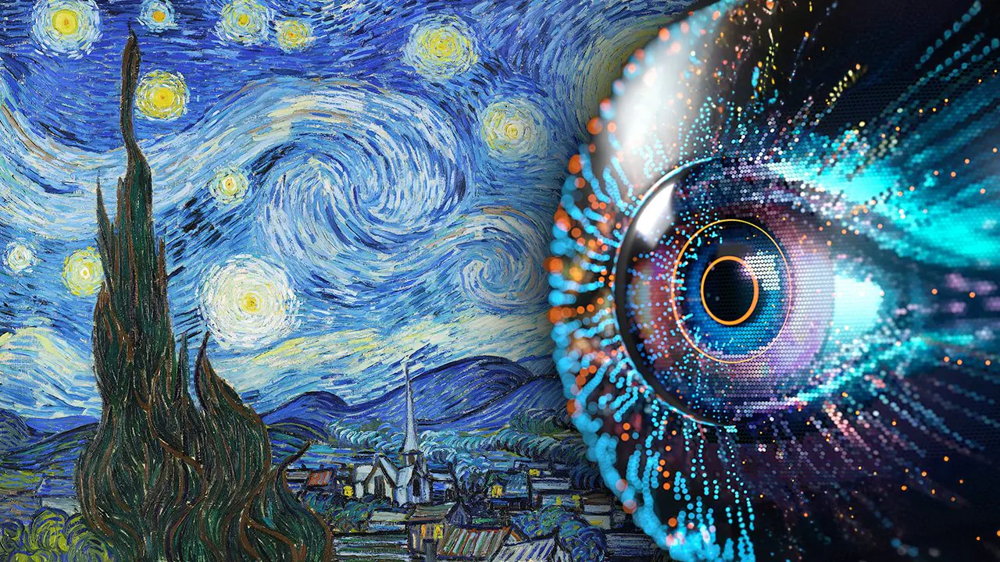

CODIFICHE
ASCII(tastiera)

(ASCII) è uno standard di codifica dei caratteri utilizzato nei computer e nei dispositivi elettronici per rappresentare il testo
e ogni lettera o carattere sonon rapresentati dalla sezione di zeri e uno(0;1)
è una codifica di caratteri che usa 7 bit per rappresentare 128 caratteri, inclusi lettere, numeri e simboli
UNICODE

Unicode è un sistema di codifica universale che consente di rappresentare quasi tutti i caratteri scritti del,
mondo in modo unificato, permettendo l'interoperabilità tra diverse lingue, piattaforme e applicazioni.
i suoi utilizzi sono alla base della gestione dei dati testuali moderni su Internet e nei sistemi informatici.
IMMAGINI

La codifica delle immagini si riferisce al processo attraverso il quale un'immagine viene trasformata in un formato che può essere facilmente memorizzato
trasmesso o elaborato da un computer.che attraverso la rappresentazione di numeri che rappresentano i colori e le intensità di ciascun pixel.
BITMUP

Il bitmap (o mappa di bit) è una tecnica di rappresentazione delle immagini digitali in cui l'immagine è costituita da una griglia di pixel,
ognuno dei quali ha un valore che ne determina il colore. Questo tipo di rappresentazione è usato in diversi formati di immagine come BMP, PNG, JPEG e GIF.
VETTORIALE

Le immagini vettoriali sono un metodo di rappresentazione grafica che usa formule matematiche per definire forme geometriche
come punti, linee, curve e poligoni, invece di una griglia di pixel (come nel bitmap). Questo permette di scalare le immagini all'infinito senza perdita di qualità.
vai alla pagina indice
ASCII(tastiera)
UNICODE
IMMAGINI
BITMUP
VETTORIALE